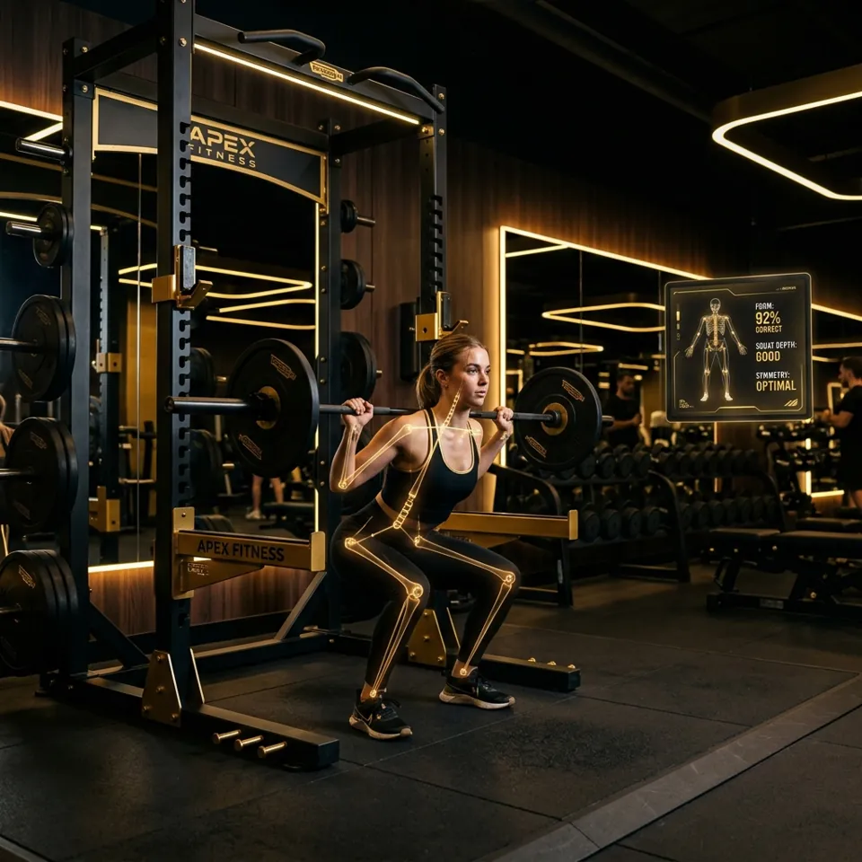
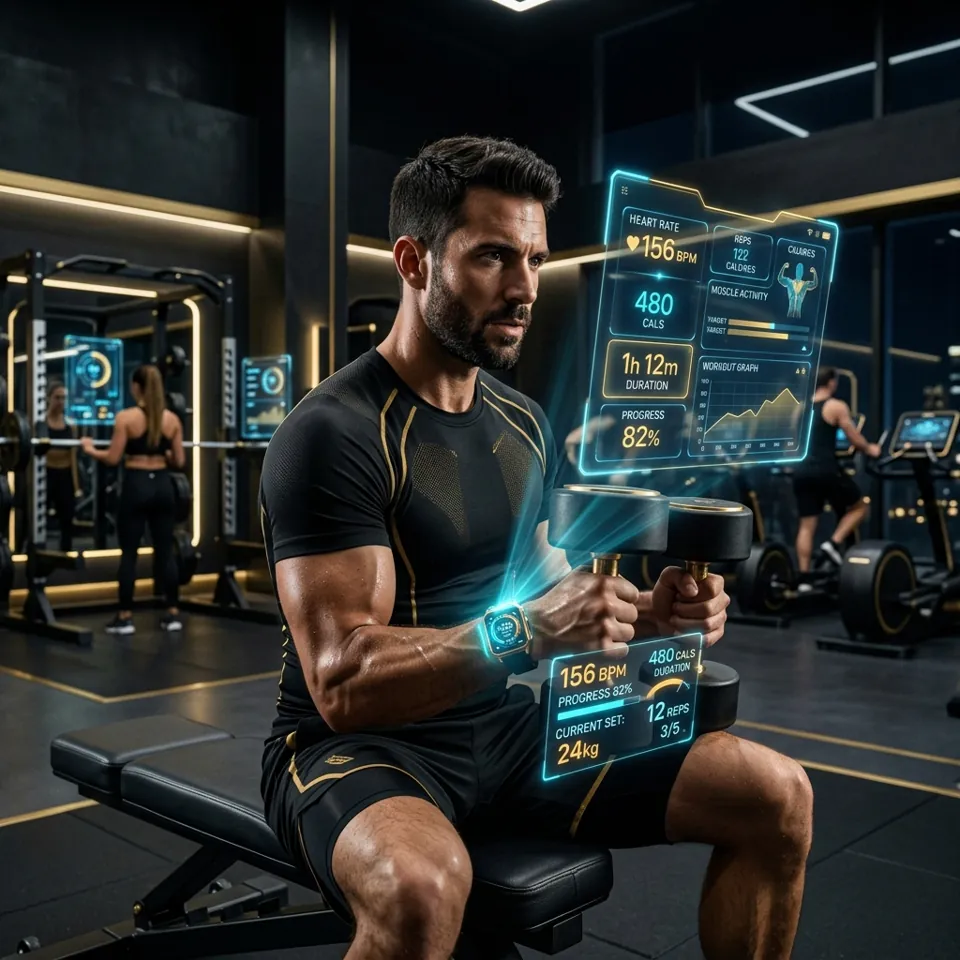

Abstract
The AI Fitness Assistant is a browser-based computer vision system that tracks resistance-training exercises in real time from an ordinary webcam or phone camera. Google’s MediaPipe Pose model locates 33 body landmarks in every frame; the application converts them into joint angles and body positions, smooths the signal, and runs a per-exercise state machine that only counts a repetition once its full range of motion is complete.
The Exercise Lab ships 23 trackers: 21 repetition counters and 2 timed holds. Form checks turn the on-screen skeleton red and explain the fault in plain words. All inference runs on the user’s device, so no video or body data ever leaves the browser. In automated testing the current engine handled 33 of 33 scripted scenarios correctly on both 16:9 and 4:3 cameras, against 20 of 33 for the previous version.
Problem statement & motivation
Resistance exercise provides proven cardiovascular, metabolic and musculoskeletal health benefits. However, inexperienced lifters face substantial risks of joint strain and acute injury when they train with poor posture or a compromised range of motion, and most train without a coach watching.
Wearable inertial measurement units (IMUs) and motion-capture suits can measure movement precisely, but they need specialised, expensive hardware. This project investigates whether a consumer webcam and edge machine learning can deliver useful biomechanical feedback directly in a web browser.
The aim is not to replace a coach. It is to answer, immediately and objectively, the two questions every lifter asks: did that rep count? and was my position safe?

Objectives & requirements
Functional
- Track the body in real time from a single RGB camera (webcam or phone).
- Count a repetition only when the full range of motion is reached, ignoring half-reps and bounces.
- Time isometric holds (Plank, Wall Sit) only while the position is actually held.
- Detect common form faults and explain them in words.
- Cover upper body, lower body, core and full-body movements.
Non-functional
- Private: all processing on-device; no account and no uploads.
- Zero install: a static website that runs in any modern browser.
- Camera-independent: the same movement measures the same on any camera shape and at any distance.
- Accessible: keyboard-operable controls, visible focus, and cues announced to screen readers.
System architecture
Every tracker runs the same six-step pipeline on each camera frame. Only step 5, the exercise’s own rules, differs between trackers.
- 1CameraFrames from
getUserMedia - 2Pose modelMediaPipe Pose finds 33 landmarks
- 3GeometryJoint angles & body ratios
- 4Smoothing~160 ms moving average
- 5State machineThe exercise’s rep rules
- 6FeedbackSkeleton, meter, cues, count
Components
| Part | Location | Responsibility |
|---|---|---|
| Tracker pages (23) | exercises/*_web.html | Camera session, landmark geometry, the rep state machine and cues. Each page is self-contained. |
| Exercise Lab | dashboard.html | Catalogue of every tracker and tool, grouped by muscle group. |
| Shared stylesheet | assets/css/common.css | Design tokens, the lab layout, camera stage and rep progress meter. |
| Site behaviour | assets/js/ui.js | Mobile navigation, current-page highlighting and scroll reveal. |
| Routine mode | assets/js/routine.js | Optional multi-exercise routines driven by each tracker’s repCompleted event. |
| Homepage demo | assets/js/hero-demo.js | Animated figure scored by the Squat tracker’s own angle formula and thresholds. |
| Calculators | pages/onerepmax.html, pages/strength_level.html | Epley one-rep-max estimate and bodyweight strength standards. |
| MediaPipe libraries | jsDelivr CDN | pose, camera_utils and drawing_utils, downloaded once by the browser. |
Lifecycle of a set
-
Start opens the camera and, the first time only, creates the pose model.
Later Starts reuse the same model and call
reset(): MediaPipe’s WebAssembly runtime cannot be rebuilt on a page, so closing and re-creating it would leave the tracker silent. -
Each frame is sent to the model. Its results arrive in
onResults, which measures the body, advances the state machine and redraws the skeleton. - Stop ends the set: the camera turns off and the rep count, hold timer, smoothing history and form state all reset to zero. A frame still being processed when Stop is pressed is ignored, so it cannot leave stale state for the next set.
Pose landmarks
MediaPipe Pose, based on the BlazePose network [1], returns 33 landmarks per frame.
Each has an x and y position as a fraction of the frame
(0–1), a relative depth z, and a visibility score.
The trackers run the full model (complexity 1) with landmark smoothing on and
detection and tracking confidence set to 0.7.
A landmark is only trusted when its visibility is at least 0.5, and an angle is only measured when all three of its points pass. A limb hidden from the camera therefore drops out instead of producing a wild reading.
| Index | Landmark | Used for |
|---|---|---|
| 0 | Nose | Pull-up head height |
| 7, 8 | Ears | Spine checks; pull-up head height when filmed from behind |
| 11, 12 | Shoulders | Almost every angle; the shoulder-width scale for Lat Pulldown |
| 13, 14 | Elbows | Elbow angles; the elbows-overhead gate for Tricep Extension |
| 15, 16 | Wrists | Elbow angles; bar height for Pull-ups, Lat Pulldown and presses |
| 23, 24 | Hips | Hip angles, body line and torso lean |
| 25, 26 | Knees | Knee angles |
| 27, 28 | Ankles | Knee angles and body line |
| 29–32 | Heels, toes | Heel lift for Calf Raises |
Measuring joint angles
A joint angle uses three landmarks: for the elbow, the shoulder (A), elbow (B) and wrist (C). The two-argument arctangent gives the direction of each limb segment, and their difference is the angle at B.
Landmark x is a fraction of the frame’s width and
y of its height. On a 16:9 webcam one unit of x is
1.78 times longer than one unit of y, so using the raw numbers skews every
angle that isn’t perfectly horizontal or vertical. The trackers rescale
x by the video’s aspect ratio first:
const aspect = video.videoWidth / video.videoHeight;
let radians = Math.atan2(c.y - b.y, (c.x - b.x) * aspect)
- Math.atan2(a.y - b.y, (a.x - b.x) * aspect);
let angle = Math.abs(radians * 180 / Math.PI);
if (angle > 180) angle = 360 - angle;
Measured effect
The same two photographs were padded into three frame shapes and run through the real pose model. A good measurement should not depend on the frame shape.
| Photo | Frame | Uncorrected | Aspect-corrected | MediaPipe 3D |
|---|---|---|---|---|
| Standing | 4:3 | 178.6° | 178.1° | 168.7° |
| Standing | 16:9 | 179.9° | 179.9° | 168.5° |
| Standing | 9:16 | 172.1° | 175.6° | 167.6° |
| Deep squat | 4:3 | 77.1° | 74.1° | 68.2° |
| Deep squat | 16:9 | 63.1° | 65.8° | 64.7° |
| Deep squat | 9:16 | 62.6° | 67.9° | 67.6° |
For the squat the spread across frame shapes falls from 14.5° uncorrected to 8.3° corrected. MediaPipe’s 3D world landmarks [3] were the most stable (3.5°) but read a straight leg as about 168°, too close to the 160–165° lockout thresholds. The trackers therefore use aspect-corrected 2D angles, which keep the thresholds’ meaning.
Distance-independent measures
Some movements are judged by position rather than angle. Each is scaled by the body itself, so the result doesn’t change with distance from the camera:
- Lat Pulldown: wrist height above or below the shoulders, measured in shoulder widths.
- Calf Raises: heel height above the toes as a fraction of shin length, compared with a resting baseline captured at Start.
- Pull-ups: head height compared with the hands, which mark the bar.
- Plank, Burpees, torso-lean checks: torso tilt measured in true pixel proportions.
Smoothing the signal
Landmarks jitter slightly from frame to frame. Each reading is averaged over the last ~160 ms (at most five frames). A fixed five-frame average, used previously, lags more as the frame rate drops. On a slower phone it can smooth away the bottom of a fast rep before the angle crosses its threshold.
The table shows a simulated squat rep (knee 170° → 85° → 170°) and the lowest smoothed angle each method reaches. The rep counts only if that value drops below the 100° threshold.
| Rep length | Frame rate | 5-frame average | 160 ms window |
|---|---|---|---|
| 0.8 s | 8 fps | 119.0° · missed | 95.6° · counted |
| 0.8 s | 12 fps | 104.5° · missed | 87.6° · counted |
| 0.8 s | 30 fps | 87.9° · counted | 87.9° · counted |
| 1.0 s | 8 fps | 107.0° · missed | 91.2° · counted |
| 1.0 s | 12 fps | 95.8° · counted | 87.8° · counted |
| 1.5 s | 8 fps | 95.8° · counted | 87.8° · counted |
At 30 fps the two methods are identical; the time window only changes behaviour on slower devices.
Counting reps
Each tracker is a finite state machine with two thresholds and a gap
between them. For a squat, the knee angle dropping below 100° arms the rep
(DOWN), and rising above 160° while armed counts it (UP). The gap
stops jitter around a single line from double-counting, and the required order means
half-reps and bounces never count.
How trackers read the body
| Strategy | What it does | Used by |
|---|---|---|
| Two-sided average | Averages the left and right angles when both are visible | Squats, Bench Press, Deadlifts, Push-Ups, Dips, … |
| Front leg | Uses the more bent knee | Lunges, Bulgarian Split Squat |
| Nearest side | Uses the side the camera sees best | Barbell Row, Situps, Tricep Kickback, Burpees |
| Both arms required | Needs both arms in view | Shoulder Press, Lateral Raise, Lat Pulldown |
| Alternating | A left curl then a right curl count as one rep | Biceps Curl |
| Gated | Ignores movement outside the exercise’s position | Overhead Tricep Extension (elbows overhead), Shoulder Press (wrists overhead to lock out) |
| Timed hold | The timer runs only while the position is held; Stop resets it | Plank, Wall Sit |
| Calibrated | Captures a resting baseline over the first 15 frames of every set | Calf Raises |
| Multi-phase | Requires stand → plank → stand | Burpees |
Every completed rep dispatches a repCompleted browser event with the
current count; routine mode listens for it to advance to the next exercise.
Exercise reference
The exact rules each tracker applies. Angles are in degrees; “armed” is the position that must be reached before a rep can count.
| Exercise | Camera | Measures | Armed | Counts | Form check |
|---|---|---|---|---|---|
| Chest & Shoulders | |||||
| Bench Press | Side-on | Elbow, both sides averaged | < 90 | > 160 | — |
| Shoulder Overhead Press | Facing | Elbow, both arms | < 100 | > 150 with both wrists above the shoulders | Torso lean > 20 |
| Lateral Raise | Facing | Shoulder (hip–shoulder–elbow), both arms | < 35 | > 75 | Torso lean > 20 |
| Push-Ups | Side-on | Elbow, averaged | < 90 | > 160 | Body line (shoulder–hip–ankle) < 150 |
| Front Raise | Side-on | Shoulder (hip–shoulder–elbow), averaged | < 35 | > 80 | Torso (shoulder–hip–knee) < 160 |
| Dips | Side-on | Elbow, averaged | < 90 | > 150 | — |
| Back | |||||
| Pull Ups | Facing or behind | Elbow + head vs hands | Dead hang, elbow > 150 | Head above the hands | — |
| Lat Pull Down | Facing | Wrist height, in shoulder widths | Wrists 0.5 above shoulders | Wrists 0.1 below shoulders | Torso lean > 20 |
| Barbell Row | Side-on | Elbow, nearest side | Extended > 150 | Pulled < 90 | Spine (ear–shoulder–hip) < 140 |
| Deadlifts | Side-on | Hip (shoulder–hip–knee), averaged | < 90 | > 160 | Spine < 140 |
| Romanian Deadlift | Side-on | Hip, averaged | < 110 | > 165 | Spine < 140; knee < 130 (squatting) |
| Arms | |||||
| Biceps Curl | Both arms in view | Elbow, each arm | Arm extended > 150 | Curl < 60; left then right = 1 rep | Torso lean > 20 |
| Overhead Tricep Extension | Side-on | Elbow, averaged, elbows above shoulders | < 60 | > 150 | — |
| Tricep Kickback | Side-on | Elbow, arm nearest the camera | < 90 | > 150 | — |
| Core | |||||
| Situps | Side-on | Hip (shoulder–hip–knee), nearest side | Lying > 120 | Sitting < 70 | — |
| Plank | Side-on | Body line + torso tilt | Timer runs while the body line is > 150 and the torso is within 35 of level | Out of position | |
| Lying Leg Raises | Side-on | Hip (shoulder–hip–ankle), averaged | Flat > 160 | Raised < 110 | — |
| Legs | |||||
| Squats | Side-on | Knee (hip–knee–ankle), averaged | < 100 | > 160 | Spine < 140 |
| Lunges | Side-on | Knee, front leg | < 100 | > 150 | Spine < 140 |
| Bulgarian Split Squat | Side-on | Knee, front leg | < 100 | > 150 | Spine < 140 |
| Wall Sit | Side-on | Knee, averaged | Timer runs while the knee is 80–110 | Cue to slide down or rise up | |
| Calf Raises | Side-on | Heel lift ÷ shin length vs baseline | Lift < 0.03 | Lift > 0.08 | — |
| Full Body | |||||
| Burpees | Side-on | Torso tilt, knee, body line | Standing: tilt < 30, knee > 150, body line > 150 | Standing again after a plank (tilt > 60, body line > 140) | — |
Feedback & interface
On the camera view
- While a set runs, only the skeleton and the rep progress meter are drawn over the video. There are no numbers or letters on the body.
- The skeleton turns red while a form check fails.
- The progress meter fills from 0% at the starting position to 100% at the end of the movement. Timed holds don’t show it.
- The canvas is sized to the camera frame and cropped exactly like the video, so the skeleton sits on the body.
In the side panel
- The rep count (or hold time in seconds), reset to zero by Stop.
- The next cue, colour-coded: amber waiting, volt act now, red fix your form.
- Form messages such as “KEEP YOUR CHEST UP”, “KEEP YOUR TORSO UPRIGHT” or “HINGE AT THE HIPS, NOT THE KNEES”.
- The count and cues are live regions, so screen readers announce them.
Controls: Start, Stop, Flip Camera (front or rear, with mirroring handled) and Hide/Show Skeleton.
Privacy & performance
Privacy
Inference runs in the browser on WebGL and WebAssembly. No video, image or landmark data is sent anywhere: the only network requests are for the site itself, its fonts and the MediaPipe model files. There are no accounts and no analytics.
Performance
- One pose model per page, reused across sets.
- Only the skeleton is drawn each frame; the camera image is never redrawn onto the canvas.
- Smoothing adapts to the device’s frame rate.
- The full model (complexity 1) balances accuracy and speed.
Evaluation
-
Synthetic skeletons. An automated browser harness replaces the pose
model with skeletons of exactly known joint angles and runs each tracker’s own
page code. There are 33 scenarios covering all 23 trackers:
- 16:9 and 4:3 cameras;
- a person close to the camera and twice as far;
- fast reps at about 9 fps;
- movements that must not count (curls on the press and tricep pages, squatting during an RDL);
- form faults, timed holds, and Stop/Start resets.
- Real model. The real MediaPipe Pose package ran against a fake webcam feed of photographs. Every tracker went through three Start/Stop sessions.
- Measurement study. The angle and smoothing comparisons in sections 06 and 07.
| Check | Before the fixes | Now |
|---|---|---|
| Synthetic scenarios, 16:9 camera | 20 / 33 | 33 / 33 |
| Synthetic scenarios, 4:3 camera | — | 33 / 33 |
| Squat reps across 3 Start/Stop sessions (real model) | 2 / 0 / 2 | 2 / 2 / 2 |
| Trackers still tracking after restarts (real model) | — | 23 / 23 |
| Text drawn over the camera view | Angle labels | None |
The 13 scenarios the previous engine failed exposed real bugs. On a 16:9 camera Deadlift, Romanian Deadlift and Wall Sit never registered. Pull-ups could not count from a dead hang, and Shoulder Press counted on the way down. Curls added reps to Shoulder Press and Overhead Tricep Extension, and Lat Pulldown depended on distance from the camera. Fast reps were missed at low frame rates.
These tests prove each tracker does what its rules say. They do not prove the thresholds suit every body: no study with real athletes has been run yet (see section 13).
Limitations & future work
Known limitations
- Monocular depth ambiguity: a single 2D camera loses accuracy when a limb moves towards or away from it, which is why most trackers ask for a side-on view.
- Self-occlusion: overlapping limbs lower the model’s confidence, and a hidden joint drops out of the measurement.
- Lighting and background: dim light or a busy background adds landmark jitter.
- Heuristic thresholds: the angles come from common coaching cues, not from a measured population, and may need tuning for mobility or body proportions.
- One person in frame: other people in view can confuse the model.
Future work
- A validation study with recorded, hand-labelled reps from real athletes.
- Optional 3D world-landmark angles, with thresholds re-tuned on that dataset.
- Per-user calibration of range of motion.
- Temporal Convolutional Networks (TCN) for continuous phase prediction, and dual-camera fusion.
- Per-set statistics such as tempo and depth, and adaptive filters such as the 1€ filter [5].

Student project contributors
Computer vision lead
MediaPipe & pipeline integration
Biomechanics & maths
Vector angles & FSM rep logic
Front-end engineering
HTML5 canvas & UI architecture
References
- Bazarevsky, V., Grishchenko, I., Raveendran, K., Zhu, T., Zhang, F., & Grundmann, M. (2020). BlazePose: On-device Real-time Body Pose tracking. arXiv preprint arXiv:2006.10204.
- Lugaresi, C., et al. (2019). MediaPipe: A Framework for Building Perception Pipelines. Third Workshop on Computer Vision for AR/VR at IEEE CVPR.
- Grishchenko, I., Bazarevsky, V., Zanfir, A., et al. (2022). BlazePose GHUM Holistic: Real-time 3D Human Landmarks and Pose Estimation. arXiv preprint arXiv:2206.11678.
- Baechle, T. R., & Earle, R. W. (2008). Essentials of Strength Training and Conditioning. National Strength and Conditioning Association (NSCA), Human Kinetics.
- Casiez, G., Roussel, N., & Vogel, D. (2012). 1€ Filter: A Simple Speed-based Low-pass Filter for Noisy Input in Interactive Systems. Proceedings of CHI 2012, ACM.
- W3C. Media Capture and Streams (the
getUserMediaAPI). https://www.w3.org/TR/mediacapture-streams/